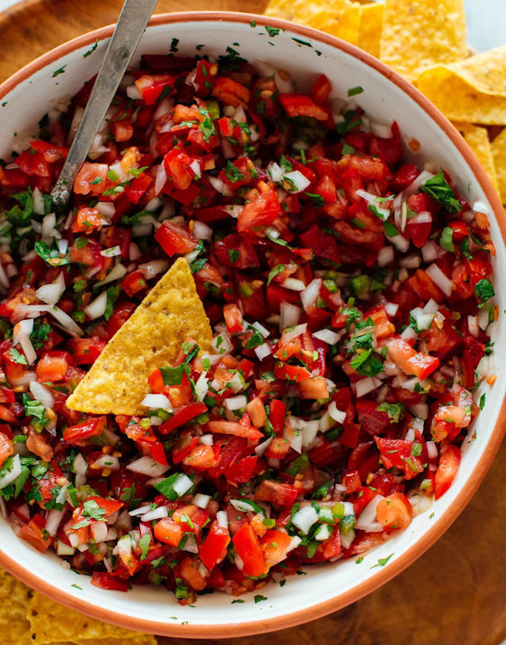

Picosito Pico de Gallo

A classic Mexican tomato dip (or sauce) that adds a fresh, healthy, low-calorie boost of flavor to just about any Mexican meal.
Ingredients
- 1 Tomato
- Half onion
- 1 Japapeno peper
- Cilantro
- Juice of a lime
- A tablespoon of salt
Steps
- Use ripe red tomatoes, this is the key to making a great pico de gallo
- Chop your tomato, onion, jalapeño and cilantro finely and you will be rewarded with more flavor in every bite. This is worth the extra effort!
- Let the onion, jalapeno, lime and salt marinate while you chop the tomatoes and cilantro.
- Let your pico rest for 15 minutes before serving. This step gives the flavors time to mingle and brings out their best. As the tomatoes and remaining ingredients rest, the salt draws the moisture out of the ingredients and condenses their flavor.
- Serve with a slotted spoon and enjoy! Pico de gallo can be eaten with quesadillas, nachos or any other type of mexican food, flavor is always versatile.
Home Page